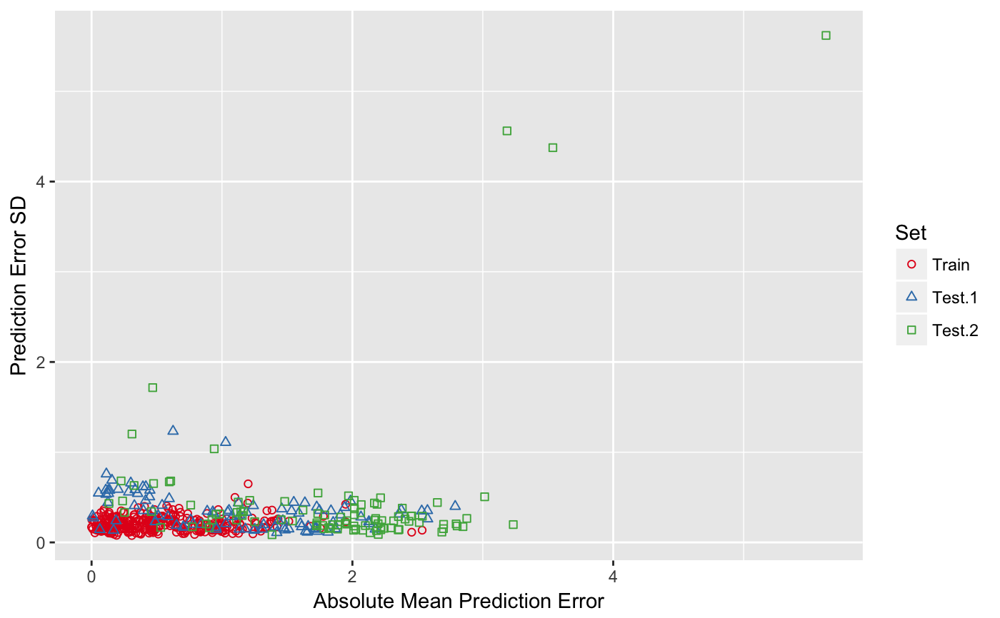

R/enspls.ad.R
enspls.ad.RdModel applicability domain evaluation with ensemble sparse partial least squares.
enspls.ad(x, y, xtest, ytest, maxcomp = 5L, cvfolds = 5L, alpha = seq(0.2, 0.8, 0.2), space = c("sample", "variable"), method = c("mc", "boot"), reptimes = 500L, ratio = 0.8, parallel = 1L)
| x | Predictor matrix of the training set. |
|---|---|
| y | Response vector of the training set. |
| xtest | List, with the i-th component being the i-th test set's predictor matrix (see example code below). |
| ytest | List, with the i-th component being the i-th test set's response vector (see example code below). |
| maxcomp | Maximum number of components included within each model.
If not specified, will use |
| cvfolds | Number of cross-validation folds used in each model
for automatic parameter selection, default is |
| alpha | Parameter (grid) controlling sparsity of the model.
If not specified, default is |
| space | Space in which to apply the resampling method.
Can be the sample space ( |
| method | Resampling method. |
| reptimes | Number of models to build with Monte-Carlo resampling or bootstrapping. |
| ratio | Sampling ratio used when |
| parallel | Integer. Number of CPU cores to use.
Default is |
A list containing:
tr.error.mean -
absolute mean prediction error for training set
tr.error.median -
absolute median prediction error for training set
tr.error.sd -
prediction error sd for training set
tr.error.matrix -
raw prediction error matrix for training set
te.error.mean -
list of absolute mean prediction error for test set(s)
te.error.median -
list of absolute median prediction error for test set(s)
te.error.sd -
list of prediction error sd for test set(s)
te.error.matrix -
list of raw prediction error matrix for test set(s)
Note that for space = "variable", method could
only be "mc", since bootstrapping in the variable space
will create duplicated variables, and that could cause problems.
data("logd1k") # remove low variance variables x = logd1k$x[, -c(17, 52, 59)] y = logd1k$y # training set x.tr = x[1:300, ] y.tr = y[1:300] # two test sets x.te = list( "test.1" = x[301:400, ], "test.2" = x[401:500, ]) y.te = list( "test.1" = y[301:400], "test.2" = y[401:500]) set.seed(42) ad = enspls.ad( x.tr, y.tr, x.te, y.te, maxcomp = 3, alpha = c(0.3, 0.6, 0.9), space = "variable", method = "mc", ratio = 0.8, reptimes = 10) print(ad)#> Model Applicability Domain Evaluation by ENSPLS #> --- #> Absolute mean prediction error for each training set sample: #> [1] 0.4625877639 0.8274736997 0.6990680756 0.9389583113 0.3367972322 #> [6] 0.5116465748 0.7317333398 0.4723174939 0.8054985416 0.7288932464 #> [11] 0.9888897302 0.7131642996 1.1956536288 0.8398449812 0.8254521276 #> [16] 1.0397599386 0.3025605354 0.1617919863 0.5045548096 0.8331961940 #> [21] 0.6080724967 0.1729815793 1.7776278109 1.1358012169 0.5039292424 #> [26] 0.6506936229 1.3352443213 1.0036182491 0.1638776654 0.1663353730 #> [31] 0.1491281823 0.3255972970 0.1100397435 2.5348048694 0.5346649584 #> [36] 0.1879394936 0.8692169581 0.1919962396 0.0760604848 0.3246226854 #> [41] 0.0019412788 0.7142068513 0.4514111120 0.6500352055 0.1692429620 #> [46] 0.3382969027 0.3112992376 0.3085489114 0.1727240177 0.4055940250 #> [51] 0.0972823854 0.4557550515 0.9703203242 0.5623050287 0.8079866367 #> [56] 0.6311593007 0.2435850602 0.3912845603 0.4328814627 0.2980201835 #> [61] 0.6825308208 2.4545323369 0.2901115779 0.2444312004 1.4152971425 #> [66] 1.6786622147 0.2395215460 1.3442986397 0.1839530442 0.5853979529 #> [71] 0.0703996512 0.2028667615 0.4172774964 0.1285802035 0.2185104205 #> [76] 0.6807725260 0.1610729144 1.1126226508 0.1163130633 0.1475012984 #> [81] 0.2195008389 0.2871896282 0.0252555800 0.0402075252 0.0850106416 #> [86] 0.3573162248 0.1331277872 0.6427140745 0.2882774358 0.1806890552 #> [91] 0.8854300717 1.0993968503 0.5234124356 0.3462052136 0.6357208917 #> [96] 0.0086547996 0.4024073304 1.1261914278 0.4298089929 0.2851739037 #> [101] 0.9077164800 0.7521019719 1.3835674247 0.0571559307 0.4154050864 #> [106] 0.3094872748 0.6258532402 0.1146922183 0.3854180327 0.6230739890 #> [111] 0.7345680759 0.0001211369 0.4704813232 0.2957193772 1.9489669468 #> [116] 0.4934141620 0.2326335148 0.1310963550 0.0942885891 0.3432750119 #> [121] 0.1236685042 0.5762016780 0.0461215476 0.0770604374 0.3784249153 #> [126] 0.4664599572 0.4407820661 0.4761179824 0.3763442694 0.4060314671 #> [131] 0.4467722451 0.6825712802 0.4963584188 0.8149438397 0.9913470734 #> [136] 0.0337820467 0.0374470565 0.1096802077 0.4162854237 0.3127920747 #> [141] 0.4371496203 0.2842445485 0.2709976073 0.2332352287 0.0154411099 #> [146] 0.6333922549 0.6954623527 0.6051864511 1.0915491515 0.4477237058 #> [151] 0.5304976102 0.3606523914 0.4816628102 0.4061032781 0.4581334108 #> [156] 0.4609339184 0.0452419296 0.1079263921 1.3993095328 0.6797985843 #> [161] 0.0518768052 0.3723180525 0.1060411963 1.0802136406 0.7897030871 #> [166] 0.1593714623 0.9957024850 0.1885264890 1.1272483872 0.9266907575 #> [171] 0.1322865420 0.6216628102 0.6442701045 0.2305671293 0.1137714621 #> [176] 0.5342474978 1.0233684474 0.1433752056 0.8316888184 1.0265158073 #> [181] 0.8193673873 0.9152981680 0.0897916972 1.7544404317 0.1565870244 #> [186] 0.6639881293 0.1959296311 0.4898818811 0.2674741699 0.6508260176 #> [191] 0.1679712930 0.4594793236 0.1346199532 0.0240673930 0.2389545119 #> [196] 0.4246256000 0.2653913596 0.3391098226 0.3277921941 0.4701021531 #> [201] 0.7377502352 0.2736832598 0.0542377026 0.0956089540 0.2234090322 #> [206] 0.8433650212 0.2324028778 0.2520374916 0.9258524613 0.4221474921 #> [211] 0.8387379758 0.1152740851 0.1152740851 0.1600258249 1.4296690851 #> [216] 0.6024965673 0.8715538916 0.4700286844 0.4747301337 0.7302982903 #> [221] 0.5168783621 1.0247664572 0.9729893595 0.2964815994 0.0416387171 #> [226] 0.2269254093 0.1585576443 0.5455500657 0.3278952448 0.5560028115 #> [231] 0.0689427894 1.1064277683 1.0360919135 0.7896533606 0.0019927613 #> [236] 0.4661477874 1.2781877852 0.2481805311 0.2497109159 0.8153029608 #> [241] 1.4226454147 0.5883962038 0.1270119360 1.1573531860 0.9340655368 #> [246] 0.7934152451 0.2737394280 0.2738844123 0.1760922563 0.0745338489 #> [251] 0.8442422464 0.9639034692 0.9902275727 1.2849874080 1.0070780510 #> [256] 0.2495695414 0.8353477839 0.0714769624 1.3691176574 1.3360341943 #> [261] 0.6700501411 0.4033331211 1.5127734307 0.9829353853 0.9898039351 #> [266] 1.0009852951 0.0165690654 1.2542863298 0.1707249875 0.9167130361 #> [271] 1.2304291798 0.3619690795 0.3297355335 0.9541519830 0.9719030589 #> [276] 0.1549109161 0.8747178505 1.3265028084 1.0252560923 1.0815510855 #> [281] 0.8277237753 1.2369153075 1.9480515794 1.2005932252 0.6134969243 #> [286] 1.2973550896 0.2797586061 1.3803190271 0.6360084903 0.7212262705 #> [291] 0.5959713325 1.2646098085 0.1596896926 1.1971306971 1.1426147849 #> [296] 1.0898811520 0.9046836710 1.3716095303 0.1936030301 0.4861370675 #> --- #> Prediction error SD for each training set sample: #> [1] 0.13370530 0.24016681 0.09767276 0.21123634 0.15616057 0.09234294 #> [7] 0.26871544 0.10830908 0.12893835 0.12684878 0.19846764 0.09855532 #> [13] 0.16121185 0.12644936 0.21168759 0.17802841 0.24302968 0.17407876 #> [19] 0.11829263 0.21488308 0.32005136 0.23179525 0.28894981 0.20778849 #> [25] 0.25300966 0.11338335 0.17086724 0.20385642 0.20872971 0.19652683 #> [31] 0.14025216 0.30595384 0.17662538 0.13541065 0.27753812 0.15911581 #> [37] 0.11594501 0.07845336 0.14534214 0.28102916 0.16591419 0.12045760 #> [43] 0.25244939 0.19808092 0.13444045 0.10506495 0.12283036 0.07629596 #> [49] 0.09043641 0.15253942 0.12830052 0.17744112 0.20161392 0.19061420 #> [55] 0.25676635 0.22237721 0.15776919 0.24572171 0.22781570 0.24409754 #> [61] 0.16603972 0.11292671 0.19351405 0.33032967 0.24088594 0.17920041 #> [67] 0.22875691 0.35099025 0.27504107 0.22300503 0.13373952 0.10926586 #> [73] 0.21184100 0.12063546 0.15617012 0.33357633 0.10672334 0.19320763 #> [79] 0.18507998 0.10098857 0.27558750 0.23303169 0.10647872 0.28865149 #> [85] 0.19053001 0.38499150 0.15707132 0.17377044 0.14931290 0.13674226 #> [91] 0.32068637 0.49920621 0.19026348 0.26409781 0.23911859 0.14804215 #> [97] 0.13695061 0.25864485 0.22789366 0.11555340 0.19778623 0.24234208 #> [103] 0.35797819 0.15204298 0.27602444 0.14593094 0.30677312 0.15908661 #> [109] 0.22401958 0.29670124 0.17551557 0.17077089 0.23615775 0.15289821 #> [115] 0.22759954 0.27950490 0.15022287 0.10359294 0.34500813 0.23472763 #> [121] 0.22774007 0.40323232 0.17321931 0.23922803 0.09083282 0.15476880 #> [127] 0.10299847 0.13437397 0.10296351 0.39923872 0.27219846 0.12711418 #> [133] 0.15604591 0.21406973 0.21976695 0.17638400 0.13625235 0.13884807 #> [139] 0.24640316 0.19844666 0.28151636 0.15622888 0.16847525 0.19214140 #> [145] 0.24601165 0.25331605 0.15811806 0.24552702 0.23846997 0.16229134 #> [151] 0.24721308 0.10038468 0.36384603 0.17894303 0.11474626 0.25161589 #> [157] 0.15516357 0.25354814 0.23965071 0.28943017 0.13118769 0.32819553 #> [163] 0.29547183 0.15306029 0.08809521 0.13791954 0.12086260 0.28118372 #> [169] 0.10092081 0.13307053 0.31281337 0.36384603 0.28749083 0.23760795 #> [175] 0.23905104 0.29073098 0.10335345 0.27538504 0.13296978 0.20449682 #> [181] 0.13422765 0.14125843 0.20990870 0.15853214 0.19016760 0.16771251 #> [187] 0.20626358 0.22347230 0.15068847 0.16531618 0.19364745 0.23509167 #> [193] 0.33338489 0.22486915 0.25687290 0.31824505 0.18035686 0.19283228 #> [199] 0.18313503 0.23994354 0.31832981 0.24699925 0.22796715 0.36716091 #> [205] 0.20643655 0.19666282 0.21310264 0.15226079 0.10866148 0.14104111 #> [211] 0.14347727 0.12698636 0.12698636 0.24086701 0.26038288 0.18451343 #> [217] 0.19845244 0.21233089 0.23100310 0.13571300 0.17225930 0.16575428 #> [223] 0.14881122 0.11612690 0.23547067 0.34992409 0.25782876 0.29226609 #> [229] 0.30716127 0.26492272 0.25209342 0.12426420 0.26319185 0.24510281 #> [235] 0.25046226 0.28541832 0.15942675 0.18386537 0.33671575 0.20776846 #> [241] 0.17228479 0.37627384 0.21149387 0.14526164 0.16467565 0.17188411 #> [247] 0.24740623 0.21069148 0.17737839 0.12156850 0.15728229 0.21889014 #> [253] 0.19980086 0.15306013 0.12182462 0.20225031 0.11491966 0.33046385 #> [259] 0.20623825 0.15783356 0.37894123 0.19533028 0.23448478 0.13622309 #> [265] 0.18583331 0.25914575 0.23328993 0.22043408 0.28532151 0.14138415 #> [271] 0.26977687 0.24379666 0.20405661 0.13716437 0.36378476 0.17430315 #> [277] 0.19379801 0.23922832 0.13522443 0.09765629 0.21933438 0.09460877 #> [283] 0.42254356 0.64915166 0.20377361 0.12432411 0.10991024 0.23475429 #> [289] 0.23303719 0.17828393 0.24171467 0.20989862 0.28606216 0.43578580 #> [295] 0.19176493 0.24524267 0.19182204 0.22729058 0.29199281 0.13823077 #> --- #> Absolute mean prediction error for each test set sample: #> [[1]] #> [1] 0.702514521 1.511884450 0.886685066 1.043842853 0.540840762 0.397201167 #> [7] 1.835713452 1.731157549 0.585638918 1.908514424 0.511503334 0.328135966 #> [13] 0.778746631 1.813059080 0.063210083 1.245713999 1.660593740 0.414262143 #> [19] 1.466832612 0.007318726 1.240330629 1.420359253 0.839535401 0.111178115 #> [25] 0.204275817 0.936436424 1.179326585 1.641801013 1.654297113 2.128239034 #> [31] 1.868935934 1.458197562 2.360561472 0.651865349 1.589167633 1.027948534 #> [37] 1.126233063 1.135888718 1.852413108 1.319425101 0.468714972 0.760950721 #> [43] 0.929426655 1.132773749 0.168746758 1.484588678 2.374577569 0.954110383 #> [49] 0.595355748 0.156202834 0.109077929 1.473126454 1.251478154 0.138288339 #> [55] 1.188730645 0.129670388 1.433075444 2.788211309 2.065717516 1.717454710 #> [61] 0.128459478 1.939998030 1.053950887 2.575499163 0.284647191 1.311478154 #> [67] 2.576786415 0.705462479 0.447145837 0.053473665 1.550517250 0.300715886 #> [73] 0.488393599 0.334212090 0.393656356 1.726303422 1.985412178 1.746935718 #> [79] 1.077085652 0.416230117 2.175187388 1.533608530 1.717824628 1.601662383 #> [85] 1.610724862 0.125594486 0.956265776 1.029973271 0.444691793 0.113382331 #> [91] 0.489137830 1.635683426 2.531520925 0.624777699 0.187415042 0.014076901 #> [97] 1.714880122 1.406065749 2.126307781 0.353286141 #> #> [[2]] #> [1] 0.4754481 1.1436916 0.9548699 0.2264783 0.9229700 2.3161970 2.2158344 #> [8] 1.5402472 1.7344015 1.2126260 1.7361394 2.1355604 0.8796945 2.0157892 #> [15] 1.7878713 1.3837632 0.2379839 1.7277982 0.5959628 1.1114107 0.6068010 #> [22] 0.7727513 2.0994496 1.7727954 1.2507317 2.1983276 1.1246617 0.9405582 #> [29] 0.3260351 1.7815405 1.4538136 1.9587919 0.2531588 2.2173253 0.1332331 #> [36] 1.9446419 1.6208638 2.3563030 2.2948552 2.3563030 2.4491356 1.8306982 #> [43] 0.7601134 0.9826893 2.1891997 1.7281486 1.8471056 1.8857674 2.0785322 #> [50] 2.0095033 2.1686804 3.5370991 2.0676753 2.1846345 1.9103751 2.0257674 #> [57] 2.2437305 2.2192537 1.4808079 2.1972871 2.3510493 2.5360264 2.0153474 #> [64] 2.3825194 0.4592245 2.5127094 3.0141216 1.7235653 2.0117385 2.2253340 #> [71] 1.8903701 2.0635022 2.6514691 2.1719228 2.8030582 2.0139575 2.4555246 #> [78] 0.5301708 2.4040091 2.6992449 0.4688363 1.9703069 0.3099622 1.1654329 #> [85] 3.2334045 2.6979690 2.7951678 1.8182426 2.6860871 1.1154475 2.3531829 #> [92] 2.1786150 2.4339524 3.1857434 2.8477869 2.8772885 0.9028967 5.6317431 #> [99] 1.1550256 1.9579610 #> #> --- #> Prediction error SD for each test set sample: #> [[1]] #> [1] 0.1713289 0.1495175 0.3458591 0.3357475 0.4106828 0.3525297 0.3502784 #> [8] 0.1227907 0.2852497 0.3045753 0.2932831 0.4076643 0.1999782 0.1138301 #> [15] 0.1428229 0.1346484 0.1772246 0.4638844 0.2404017 0.2941225 0.4074586 #> [22] 0.1088703 0.1990047 0.5334730 0.5883744 0.3201310 0.1474496 0.1238873 #> [29] 0.1137264 0.2064897 0.1508037 0.3718231 0.3138894 0.1892427 0.3242452 #> [36] 1.1082072 0.4380710 0.3030477 0.2208257 0.1962351 0.3499340 0.2483889 #> [43] 0.3384522 0.1474157 0.1344099 0.1385859 0.3604098 0.1669200 0.4848788 #> [50] 0.6897627 0.5792126 0.1590174 0.1456324 0.5786807 0.3326164 0.5420374 #> [57] 0.2393207 0.3992039 0.2815498 0.1563218 0.5769328 0.3868641 0.3541706 #> [64] 0.3530399 0.5583973 0.1456324 0.2606689 0.1685262 0.5787541 0.5468422 #> [71] 0.4441673 0.6586205 0.2291407 0.5850690 0.6161943 0.3920764 0.4586497 #> [78] 0.3541359 0.2861296 0.6174550 0.1473783 0.3493027 0.1742848 0.2072762 #> [85] 0.1738872 0.4428880 0.1459374 0.2085101 0.5051383 0.7587987 0.2293842 #> [92] 0.4390677 0.3484666 1.2320863 0.2396734 0.2717709 0.1454457 0.1714968 #> [99] 0.2296340 0.5421866 #> #> [[2]] #> [1] 0.65262299 0.33769017 0.30983664 0.68141756 0.25063214 0.23882606 #> [7] 0.49431062 0.23765662 0.31965828 0.46561829 0.54794271 0.10736923 #> [13] 0.20373063 0.37179029 0.30382371 0.08528773 0.45916085 0.21687869 #> [19] 0.67096042 0.24924703 0.68058753 0.17301702 0.18655287 0.18680118 #> [25] 0.22994780 0.08825961 0.44619870 1.03719146 0.63057710 0.15286688 #> [31] 0.25153667 0.20287440 0.33265514 0.14000270 0.43167071 0.21555547 #> [37] 0.35759084 0.14272882 0.16167554 0.14272882 0.29211715 0.15413665 #> [43] 0.41365019 0.31568951 0.42234167 0.19676197 0.19672549 0.14745023 #> [49] 0.13487090 0.13519742 0.43634500 4.37567943 0.41886054 0.13075165 #> [55] 0.28024179 0.14745023 0.15618581 0.17006811 0.45416917 0.20672425 #> [61] 0.13905776 0.29027454 0.30648036 0.37929920 0.34173978 0.22041539 #> [67] 0.50567603 0.18492100 0.18190102 0.24159324 0.19252155 0.32982643 #> [73] 0.44205891 0.24647885 0.18240389 0.46647938 0.29317015 0.16583852 #> [79] 0.25880365 0.20009229 1.71569786 0.51617226 1.20133863 0.34796034 #> [85] 0.19744893 0.15223891 0.20503921 0.16445457 0.11479305 0.33272982 #> [91] 0.28612213 0.26490989 0.23349507 4.56179683 0.17479257 0.26554636 #> [97] 0.16348937 5.61984993 0.29782860 0.24028899 #>plot(ad)# the interactive plot requires a HTML viewer# NOT RUN { plot(ad, type = "interactive") # }